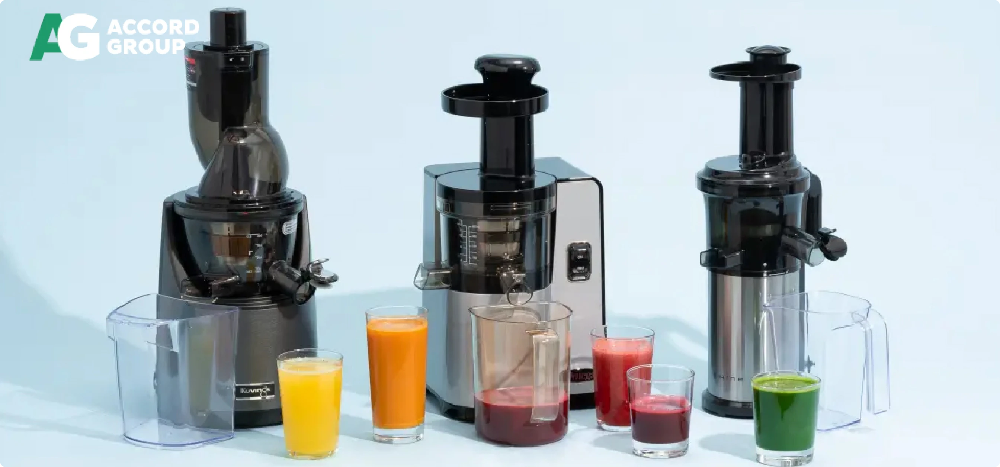
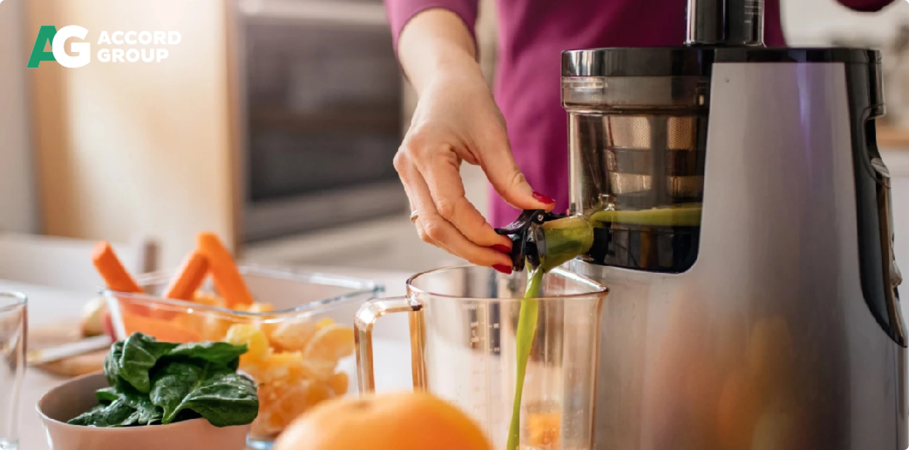

Професійні соковижималки - види та їх особливості
Свіжовичавлений сік - це джерело корисних речовин. А тому в багатьох кафе, ресторанах у меню є ця позиція, яка швидко стає однією з найулюбленіших у відвідувачів. На сніданок, обід і вечерю склянка свіжого соку - що може бути краще? Ще більше заворожує, коли сік виробляється буквально на очах відвідувачів. Для цього потрібна професійна соковижималка. Цей пристрій і має дуже гарний вигляд, і володіє відмінною потужністю і продуктивністю.

Види професійних соковижималок
У продажу можна знайти велику кількість різних соковижималок, які діляться на такі основні види: за сферою застосування можуть бути професійними, побутовими, промисловими;
- за типом конструкції: відцентрові та шнекові;
- за типом продуктів, з якими можуть працювати. Для м'яких (ягоди, фрукти) овочів (наприклад, помідори), а також соковитискач для твердих овочів, як морква, тверді яблука, селера. Також є вироби для кісточкових продуктів - у них передбачена система, яка видаляє кісточку, чого немає у звичайних соковижималках. Є й універсальна техніка, в якій є певні режими для роботи з різними продуктами;
- ручні, механічні, електричні. Перші - це найпростіші, і підходять здебільшого для цитрусових - потрібно розрізати фрукт навпіл, і вручну видавлювати з нього сік, попередньо нанизавши на спеціальний виступ. У механічній соковижималці потрібно крутити ручку або тиснути на важіль.
Професійне обладнання - це якраз таки електричне, коли потрібно лише виставити програму і поступово додавати шматочки фруктів, овочів або ягід, а все інше соковижималка зробить сама.
Особливості та види професійних шнекових соковижималок
Професійна шнекова соковижималка має чудову продуктивність. Її пристрій призначений для роботи буквально з будь-якими продуктами - можна успішно робити смачні, перетерті соки з овочів і фруктів. Завдяки спеціальній втулці, забезпечується надійне віджимання і видалення кісточок навіть з ягід, а тому такий пристрій підійде для кісточкових плодів.
Здебільшого шнеки в таких соковижималках працюють на обертах від 80 до 120 оборотів, а тому соки виходять без пінки - таким чином коктейлі або смузі мають більш естетичний і апетитний вигляд.
Шнекові соковижималки працюють за технологією холодного віджиму. У підсумку жмих виходить сухішим, а це означає, що всі соки з плодів максимально видавлюються. Завдяки цьому забезпечується максимальна економічність і раціональне використання продуктів, що не можуть забезпечити звичайні побутові соковижималки.
Шнекові соковижималки мають такі переваги:
Шнекові соковижималки працюють за технологією холодного віджиму. У підсумку жмих виходить сухішим, а це означає, що всі соки з плодів максимально видавлюються. Завдяки цьому забезпечується максимальна економічність і раціональне використання продуктів, що не можуть забезпечити звичайні побутові соковижималки.
Двошнекові
Це найпродуктивніший і найуніверсальніший варіант саме завдяки наявності двох шнеків. Показник віджатого соку становить близько 90%, а це дуже багато. Коштують вони відносно дорого, але це саме той варіант, який підходить для кафе і ресторанів. Часто в комплекті йде велика кількість насадок для виробництва макаронів, масла, пюре;
Електричні горизонтальні
Для роботи використовуються спеціальні штовхачі, щоб просувати плоди під час віджимання. Ця робота займає досить багато часу, що часто не підходить для професійної кухні. Найчастіше цю техніку використовують для віджимання соку з трав і зелені;
Електричні вертикальні
Пристрій продумано таким чином, щоб техніка буквально сама втягувала плоди для подальшого віджимання соку з них. Під час вибору слід орієнтуватися на власні потреби.

Особливості та види професійних відцентрових соковижималок
Це дуже потужні та високопродуктивні агрегати, які здатні видавлювати соки навіть із найтвердіших плодів. Це дає змогу експериментувати, поєднувати різні продукти й отримувати корисні соки з високим вмістом клітковини.
Пристрій дає змогу за лічені хвилини отримати склянку свіжого і дуже корисного соку. У пристрої є центрифуга - коли плід потрапляє всередину конструкції, на нього починає діяти високий тиск. Що більшою буде швидкість роботи, то сильніше плід притискатиметься до стінок центрифуги, і то більше соку з нього буде вичавлюватися.
Відцентровані соковижималки мають такі переваги:
- висока швидкість роботи. Якщо шнекові працюють за 80-120 обертів, то відцентрові - за 3500-4500 обертів на хвилину;
- більш доступна ціна;
- можна працювати з продуктами будь-якої твердості. Ви зможете вичавлювати соки з моркви, буряка, твердих яблук;
- завантажувати продукти дуже легко, не потрібно їх проштовхувати спеціальним пристосуванням.
З таким обладнанням вам не потрібно буде купувати окремо соковижималку для твердих і м'яких плодів - цей вид впорається з будь-якими з них.
Однак під час вичавлювання сік нагрівається, а тому деякою мірою корисні речовини в ньому втрачаються. Саме тому випивати сік слід протягом 30 хвилин після його отримання, оскільки швидко починаються окислювальні процеси.
Під час вибору відцентрової соковижималки слід звертати увагу на такий момент, як об'єм контейнера, куди й закладаються плоди. Для кафе і ресторанів слід обирати середній або великий варіант, щоб у підсумку не виконувати одну й ту саму роботу кілька разів, що в підсумку зажадає від вас багато часу. До того ж у невеликих пристроях немає багато місця для макухи.
Ціна соковижималки залежатиме і від додаткових можливостей техніки. У них є різні режими роботи. Дизайн теж відіграє велику роль - якщо соки робити на очах у відвідувачів, необхідно, щоб агрегат мав гарний вигляд і поєднувався із загальним інтер'єром або іншою технікою в закладі.
Як вибрати соковижималку для фреш-барів, кафе і ресторанів?
Щоб клієнти не сумнівалися в тому, що їм подали свіжовичавлений сік, його потрібно приготувати в їхній присутності. Обираючи соковижималку для кафе чи ресторану, слід враховувати безліч моментів:
- якщо у вас у Меню буде велика кількість різних фрешів, тоді вам необхідний універсальний пристрій для різних фруктів і овочів, причому і для твердих, і для м'яких;
- Потужність. Що вищий цей показник у професійного обладнання, то швидше і якісніше воно буде видавлювати соки з різних продуктів. Від швидкості та потужності залежатиме і те, наскільки якісно буде видавлюватися сік - ідеально, коли макуха практично суха;
- Простота обслуговування. Звичайно, ручна соковижималка для цитрусових розбирається набагато швидше, ніж професійна електрична. Але виробники продумують конструкцію до найдрібніших дрібниць, а тому часто потрібно зробити лише пару маніпуляцій, діставши ємності та промивши їх водою;
- Ціна. Професійна техніка не коштуватиме дешево. При цьому важливо враховувати і виробника, і комплектацію, і кількість програм. Для кафе і ресторанів економити не варто - тут потрібне якісне і надійне обладнання, яке буде щодня повною мірою справлятися зі своїми завданнями та прослужить багато років;
- Матеріали. Професійні соковижималки зазвичай виготовлені з пластику та нержавіючої сталі. Особливо важливо, щоб основні елементи були металевими, як, наприклад, ножі;
- Габарити. Звісно, компактність відіграє велику роль, але для потужного пристрою все ж знадобиться багато вільного простору - це слід враховувати.
Важливо враховувати й те, скільки на день ви виробляєте соку. Так, якщо купити максимально продуктивну і дорогу модель соковижималки та в день робити лише склянку соку, це буде нераціональна покупка. І, навпаки, слабка соковижималка не справлятиметься зі своїми завданнями, якщо вам доведеться постійно видавлювати сік, щоб обслужити всіх своїх відвідувачів.
Обирайте Stoelzle для створення неповторної атмосфери на вашій кухні та у ресторані.